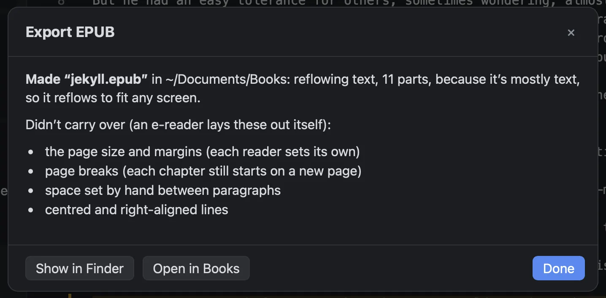

Two kinds of e-book
- Reflowing text
- The reader chooses the type size, and the text flows to fit a phone or a tablet. It can be searched and read aloud. Page breaks, centring and spacing you set by hand are left to the e-reader. For prose.
- Fixed layout
- Every page exactly as typeset. Fine on a tablet, small on a phone, and it can’t be searched or read aloud. For books where the layout is the point.
Best for this book picks fixed layout for a picture book, a paper, or a book with maths on most pages, and reflowing text for everything else. If a book can’t be reflowed for any reason, it says why and makes fixed layout instead.
Among the samples, Jekyll and Hyde, The Elements of Style and Counting Words reflow. Calculus Made Easy, Luca’s Wonderful Brain and Attention Is All You Need come out fixed.
What reflowing changes
An e-reader lays out the text itself, so some of what you set on the page can’t come with it. Foreword tells you what, in plain words: “centred and right-aligned lines”, “page breaks (each chapter still starts on a new page)”, “the page size and margins (each reader sets its own)”, “space set by hand”.
Maths, figures, and anything laid out in a grid are kept as pictures, so they look as they do on the page. A reference like “see page 12” is dropped, since an e-book has no fixed pages. Each chapter becomes its own part, so the e-reader’s table of contents works, even if your chapter openings are set by hand. None of this changes your book.
Fixed layout
Every page of the book becomes a page of the e-book, at the book’s own size. The first page is the cover, and the table of contents comes from your chapters’ headings.
Ready for the stores
Every sample, exported both ways, passes epubcheck, the standard check for EPUB files, with no errors or warnings. Your book keeps the same identity every time you export it, so a new export replaces the old one in a reader’s library instead of appearing twice. Kindle takes EPUB now, through Send to Kindle and KDP, so there’s no separate Kindle file to make.
What it doesn’t do
- A reflowing e-book has no cover picture yet. Fixed layout uses the first page.
- Maths is pictures, not text.
- Typst’s support for reflowing text is still new, so some layouts can’t reflow, and come out fixed.
- It’s been checked with epubcheck and at a phone’s width, not on every e-reader.